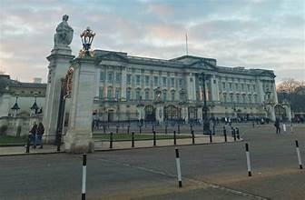
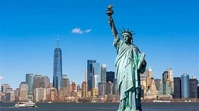
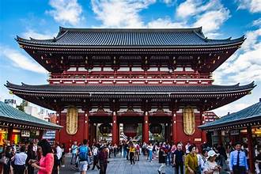

India, a diverse and vibrant country in South Asia, is known for its rich cultural heritage, historical landmarks, and natural beauty. From the iconic Taj Mahal in Agra to the serene backwaters of Kerala, India offers a wide range of experiences for travelers. The country's diverse cuisine, festivals, and traditions make it a unique destination for tourists.

Paris, the capital of France, is renowned for its art, culture, and history. The city is home to iconic landmarks such as the Eiffel Tower, Louvre Museum, and Notre-Dame Cathedral. Visitors can enjoy world-class cuisine, stroll along the Seine River, and explore charming neighborhoods like Montmartre and Le Marais.

London, the capital of England and the United Kingdom, is a global hub for finance, culture, and history. It is home to iconic landmarks such as the Tower of London, Buckingham Palace, and Big Ben. Visitors can explore world-class museums like the British Museum and Trafalgar Square.
New York City is a bustling metropolis known for its iconic skyline, Broadway shows, and diverse neighborhoods. It is home to landmarks such as Times Square, Central Park, and the Statue of Liberty. Visitors can enjoy world-class museums like the Metropolitan Museum of Art.
Tokyo, the capital of Japan, is a vibrant metropolis that seamlessly blends tradition and modernity. The city is known for its bustling neighborhoods like Shibuya and Shinjuku, historic temples such as Senso-ji, and cutting-edge technology. Visitors can indulge in world-class cuisine, shop in trendy districts, and experience unique cultural events.
